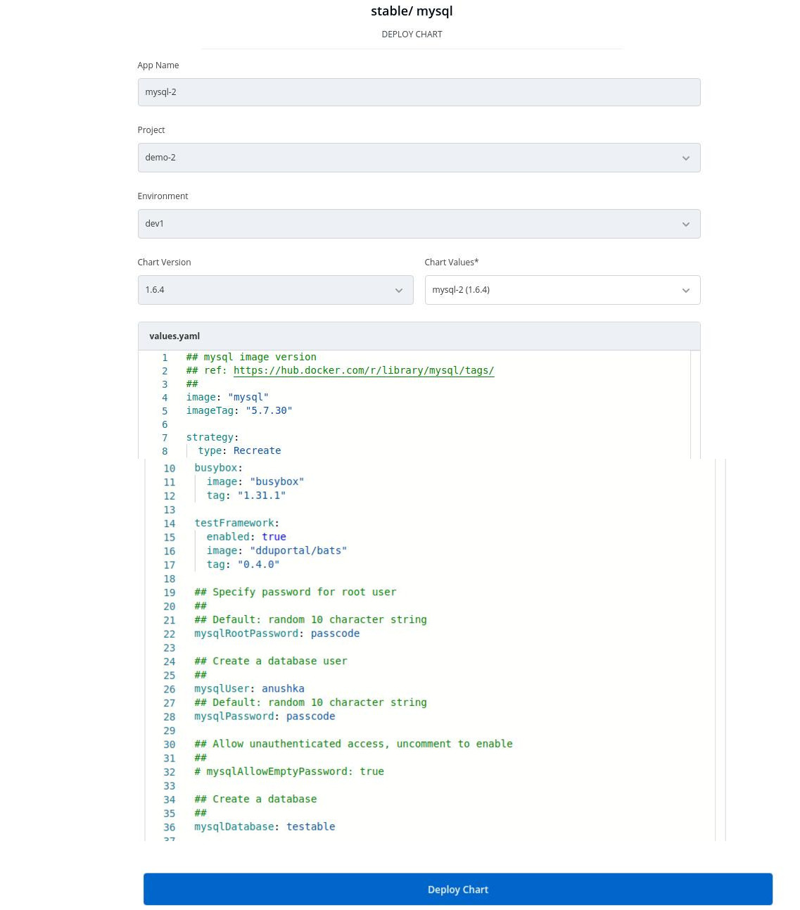

Deploying mySQL Helm chart
Introduction
stable/mysql Helm chart bootstraps a single node MySQL deployment on a Kubernetes cluster using the Helm package manager.

1. Discover the chart from the Chart Store
Select the Charts section from the left pane, you will be landed to the Chart Store page. Click on Discover and find stable/mongodb-replicaset Helm Chart.

2. Configure the Chart
After selecting the stable/mySQL Helm chart, click on Deploy
Enter the following details, to deploy mysql chart:
| Key | Description |
|---|---|
App Name |
Name of the Chart |
Project |
Select the name of your Project in which you want to deploy the chart |
Environment |
Select the environment in which you want to deploy the chart |
Chart Version |
Select the latest Chart Version |
Chart Value |
Select the latest default value or create a custom value |
Configure values.yaml
Set the following parameters in the chart, to be later used to connect mysql with your Django Application.

| Parameters | Description |
|---|---|
mysqlRootPassword |
Password for the root user. Ignored if existing secret is provided |
mysqlDatabase |
Name of your mysql database |
mysqluser |
Username of new user to create |
mysqlPassword |
Password for the new user. Ignored if existing secret is provided |

Click on Deploy to deploy the Chart
3. Check the Status of Deployment
After clicking on Deploy you will land on a page, that shows the Status of the deployment of the Chart.
The Status of the chart should be Healthy. It might take few seconds after initiating the deployment of the chart.

In case the Status, of the deployment is Degraded or takes a long time to get deployed.
Click on the Status or check the logs of the pods to debug the issue.
4. Extract the Service Name
Copy the service name, it will be used to connect your application to mySQL.